g1<-graph_from_literal(A--B, A--C, B--C, B--D)
plot(g1, vertex.color="navy", vertex.size=15,
vertex.label.cex=1, vertex.label.dist=3,
vertex.label.degree=-pi/2, asp=0.6)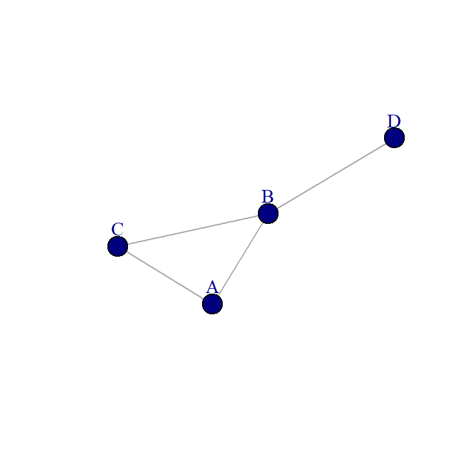
This part of the course focuses on the basic elements of a network. We discuss the basic idea of connection of a vertex (which in our case is often a human or organisation), then move on to the dyad, two actors connecting, and then we move on to a very central concept in social network analysis and sociological theory, the triad.
Intended learning outcomes:
The network size (which is often denoted \(N\) or in some case \(g\)) is the number of vertices, which in a social network are often actors. The vcount function provides the number of vertices in a graph (in addition to asking for information about the graph discussed in previous part). The network size places an upper limit on the number of connections that each individual can have (\(N-1\)). For networks of any size, though, few – if any – actors approach this limit. Let’s focus on the number of connections vertices (can) have.
A key property of each vertex is its degree, representing the number of links it has to other nodes. The degree can represent the number of friends somebody has, the number of mobile phone contacts an individual has in the call graph (i.e. the number of different individuals the person has talked to), or the number of citations a research paper gets in the citation network.
g1<-graph_from_literal(A--B, A--C, B--C, B--D)
plot(g1, vertex.color="navy", vertex.size=15,
vertex.label.cex=1, vertex.label.dist=3,
vertex.label.degree=-pi/2, asp=0.6)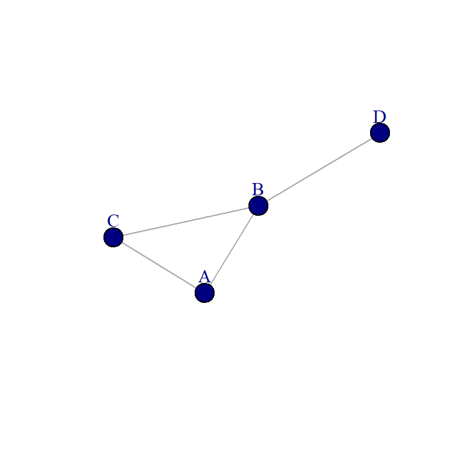
In the above figure we have: \(k_{1}=2\), \(k_{2}=3\) \(k_{3}=2\),\(k_{4}=1\). The total number of links can be expressed as the sum of the node degrees.
\(L=\) \(\sum_{k = 1}^{4} k\) \(=8\)
A B C D
2 3 2 1 plot(g1, vertex.color="navy",
vertex.size=15,
vertex.label.cex=1,
vertex.label.dist=3,
vertex.label.degree=-pi/2, asp=0.6)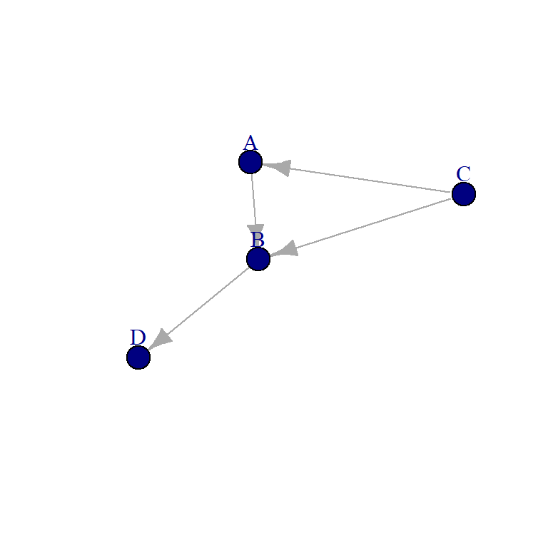
This is a directed network. In directed networks we distinguish between “indegree” (incoming links), and “outdegree” (outgoing links). The outdegree is the sum of the outgoing links (row elements in the adjacency matrix): \(k_b^{out}= 1\). The indegree is the sum of the incomping links (the sum of column elements in the adjacency matrix \(k_b^{in}= 2\).
In some cases the number of connections of an actor will only provide limited, or maybe even misleading information. For instance suppose that we measure the number of interactions in a communication network. Two actors interacting once will weigh equally as interacting 100 times when calculating the degree.
g2<-graph_from_literal(A--B, A--C, B--C, B--D)
E(g2)$weight=c(1,20,30,100)
# A simple plot of the network - we'll talk more about plots later
plot(g2, asp=0.6, edge.label=E(g2)$weight)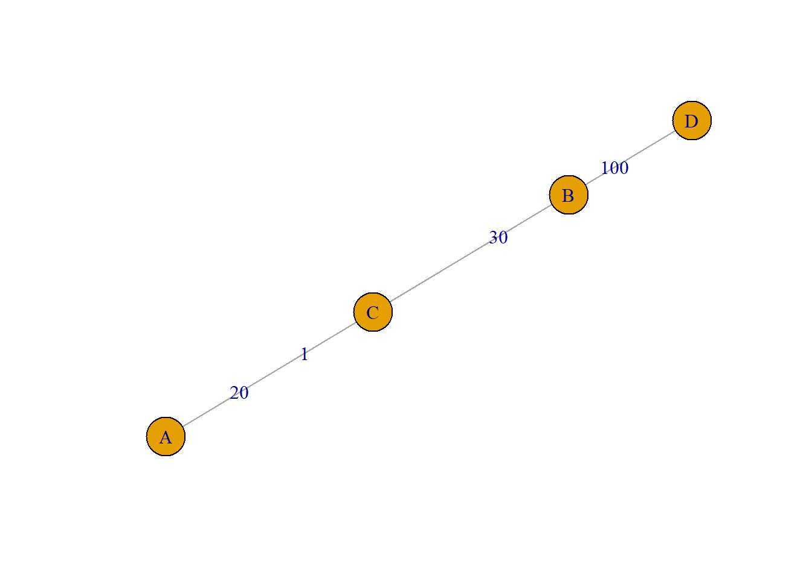
In this case we could opt for the vertex strength measure. This simply sums up the edge weights of the adjacent edges for each vertex.
The average degree is an important property of a network. It simply refers to the average number of links between actors.In the undirected network above the average degree is:
\(\overline{k}=\) \(\frac{1}{N}\) \(\sum_{k = 1}^{N}k =\) \(\frac{2L}{N}\)
So, in a undirected network with four actors, and four edges (like the undirected network above), the average degree is two (since one edge connects two actors twice).
In an directed network the average degree is simply the number of Links divided by the number of actors:
\(\overline{k}=\) \(\frac{1}{N}\) \(\sum_{k = 1}^{N}k =\) \(\frac{L}{N}\)
We can obtain some insight into the structure of a network by looking at the distribution of the degrees. Lets have a look at two social networks: one network consist of relations between households, and was collected in 1948 by American sociologists in a large field study in the Turrialba region, which is a rural area in Costa Rica. The other is a social network data were collected in the Teenage Friends and Lifestyle Study. These are friendship relations between 50 women.
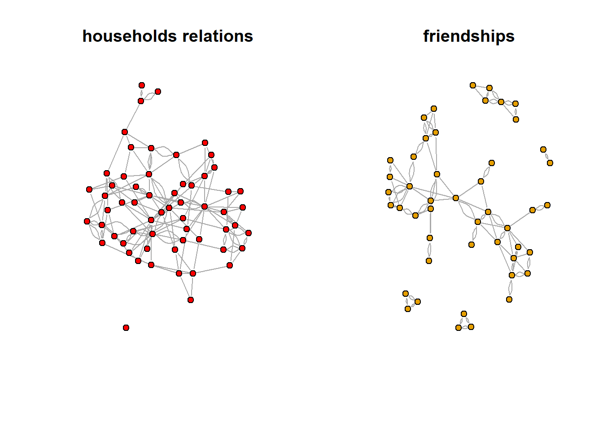
We can easily obtain basic information about the networks. The vcount (nr of vertices), and the ecount (nr of edges) commands can be used to verify the results. Note that you can get the same information about the number of vertices/edges by just typing the name of the network.
[1] 4.808511[1] 5.3[1] 47[1] 113The degree distribution captures only a small amount of information about a network. But that information still gives important clues into structure of a network.
par(mfrow=c(1,2))
d.household =degree(household)
hist(d.household,col="blue",
freq=FALSE, xlab="Degree", ylab="density",
main="household network", xlim=c(0,15), ylim=c(0,0.3))
d.friendship =degree(friendship)
hist(d.friendship,col="pink", xlab="Degree", ylab="density",freq=FALSE,
main="friendship network", xlim=c(0,15), ylim=c(0,0.3))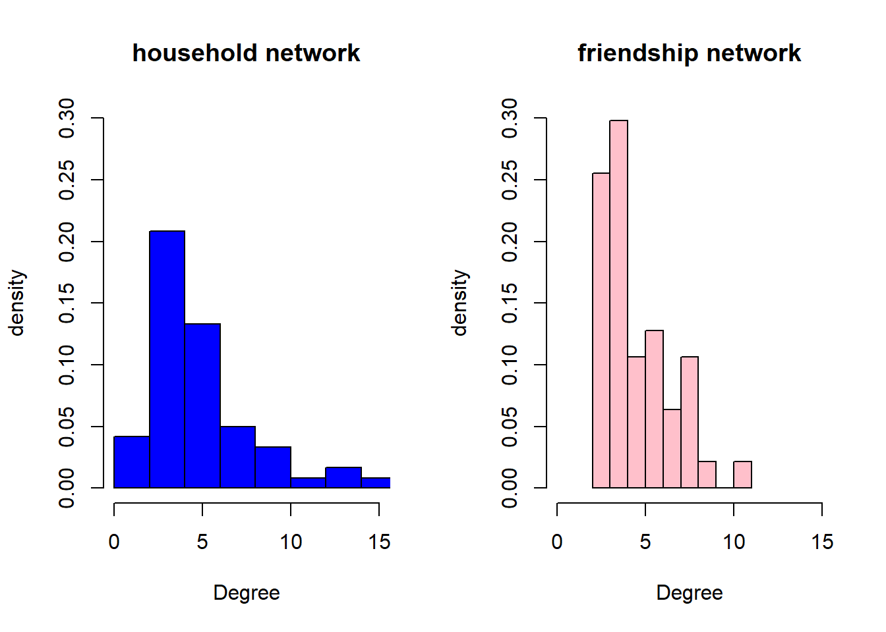
The average degrees are quite close (5.3 vs 4.8), and the distributions are similar in the sense that most vertices have relatively small degrees. However, there is a clear difference in the sense that the household network has a number of nodes with large degree, they are connected to many other households, and are in network science often referred to as hubs. There are no isolates in the friendship network, most women either have 3 or 4 friends (which aligns with the core network idea of Dunbar, see lecture).
We can break large social networks down into their constituent parts. These constituent parts are referred to as “motifs”. The most basic motif consists of two nodes and is called a dyad. Edges in a network signify the presence or absence of dyadic relations. It follows that a dyad in an undirected network can have two unique configurations: connected or disconnected; and three unique configurations in a directed network (mutual, assymetric, and null)
To illustrate we use again the first organizational network collected, consisting of observational data on 14 Western Electric (Hawthorne Plant) employees from the bank wiring room first presented in Roethlisberger & Dickson (1939). This time we focus on helping relations (who helps whom).
Initial.matrix <- read.csv("data/RDHLP.csv", header=TRUE, row.names=1, check.names=FALSE, na.strings = "")
matrix <- as.matrix(Initial.matrix)
RDHLP <- graph.adjacency(matrix, mode="directed", weighted=NULL)
plot(RDHLP, asp=0.6)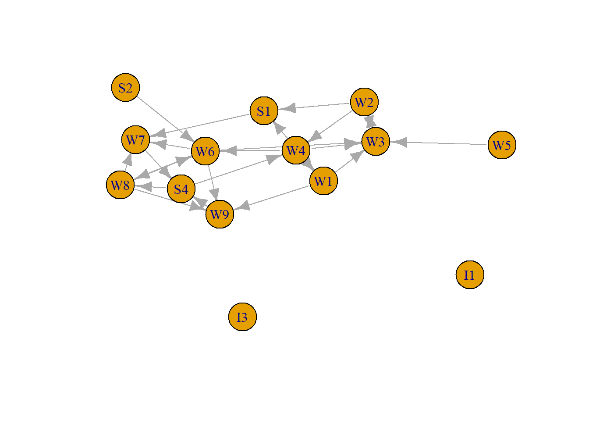
We can check the three unique configurations in a directed network (mutual, assymetric, and null) using the dyad_census command.
IGRAPH 390894a DN-- 14 24 --
+ attr: name (v/c)
+ edges from 390894a (vertex names):
[1] W1->W3 W1->W9 W1->S1 W2->W3 W2->W4 W2->S1 W3->W2 W4->W1 W4->W3 W4->W6
[11] W5->W3 W6->W3 W6->W7 W6->W8 W6->W9 W7->S4 W8->W6 W8->W7 W8->W9 W9->S4
[21] S1->W7 S2->W6 S4->W4 S4->W8$mut
[1] 2
$asym
[1] 20
$null
[1] 69There are 24 edges in this network. Since we have 14 vertices, there could have been (14*13) edges (hence the density equals about .13). There are 91 pairs of vertices. Two of them are mutual, which indicates that there are two edges between them. 20 are assymetric, there is only one edge connecting them, and 69 are unconnected.
The number of mutual pairs are used to meausre reciprocity in a directed network. Reciprocity is the tendency with which affect, or network ties, sent out by egos are returned by alters. Edges are reciprocal when ego and alter both send each other ties; reciprocity is the graph-level analogue, evaluating the tendency for edges to be reciprocal across the whole network.
The default measure of reciprocity in igraph defines the proportion of mutual connections. The total number of connections in RDHLP is 24 (2 * mutual pair + 20 assymetric pairs), the number of reciprocated connections is 4, so 4/24=.17
[1] 0.1666667I1 I3 W1 W2 W3 W4 W5 W6 W7 W8 W9 S1 S2 S4
0 0 3 3 1 3 1 4 1 3 1 1 1 2 Our graph has a reciprocity score of 0.17. Is that high or low? It depends on your expectation, and the context. In this specific case it maybe that there are a number of senior employees helping others that require help, but cannot offer anything in return. Checking the outdegree of RDHLP, lends some support to this idea.
Triads consist of three nodes and are therefore more complex than dyads, with more possible arrangements. This becomes clear when you realize an undirected triad consists of three dyads: A and B, B and C, and A and C.
In an directed graph, there will be sixteen unique triads (the unique number of motifs in directed graphs is not easily reduced to a functional form).

In an undirected graph, there are eight possible triads (2^3… sort of obvious given that each dyad can be present or absent and there are three dyads). Of those eight possible triads, four are isomorphic, so that there are four unique triads.

Triad number three in the undirected triad census is a so-called transitive triad. A triad involving actors i, j, and k is defined to be transitive if whenever i –> j and j –> k then i –> k. Note that this undirected triads can be transitive or intransitive as well, but this is not important to us in this course.
This situation in which the two alters of one ego are also connected to each other is called triadic closure and/or transitivity.
This situation occurs frequently in core networks. Around 50% of the triads are closed. These figures, however, underestimate core network density because they only count the strong ties between your friends, such as being friends or “knowing each other well.” If you were to ask instead if your friends merely “know each other,” then you would find ties among your friends to be more common because some of your friends may just know each other but not be friends. Indeed, studies suggest that, when taking this minimum definition of “knowing each other,” the clustering among alters in the core network goes up significantly and studies find a quite consistent density of around 0.75.
Transitivity tendency. If ego A has ties to alters B and C, then B and C are more likely to be (positively) connected compared with the situation in which ego A has a tie to either B or C (or to neither). In simple language: your connections likely know each other as well. We can measure the transitivity tendency (aka clustering coefficient) in igraph, for this we use the network of 14 Western Electric (Hawthorne Plant) employees from the bank wiring room again. This time we focus on positive relationships (who is friends with whom).
Initial.matrix <- read.csv("data/RDPOS.csv", header=TRUE, row.names=1, check.names=FALSE, na.strings = "")
matrix <- as.matrix(Initial.matrix)
RDPOS <- graph.adjacency(matrix, mode="undirected", weighted=NULL)
plot(RDPOS, asp=0.6)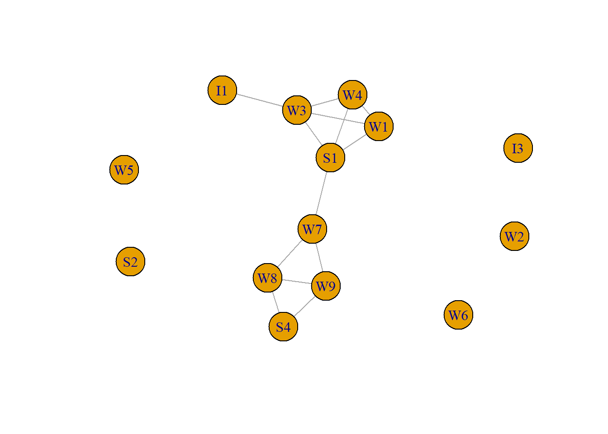
[1] 0.6428571Transitivity measures the probability that the adjacent vertices of a vertex are connected. The .64 tells us that clustering is high, two relations of a worker (provided that the worker has two) are probably related as well.
How can we understand that transitivity occurs so often in core networks? How can we explain the fact that your friends also know each other and are often befriended too—even though two random individuals have a minimum chance of knowing each other? There are three mechanisms of social tie-formation that explain the driving forces behind the transitivity tendency in core networks (Granovetter, 1973).
Meeting opportunities social ties are created in contexts of interaction, i.e., there must be an opportunity for persons B and C to meet each other in order to know each other. Because ego A has strong ties to both B and C, it means she often interacts with B and C. This could mean that B and C share the same context as A, such as attending the same school or living in the same neighborhood, and therefore they also know each other. But it could also mean that B and C meet each other because they often interact with ego A (e.g., they are invited by ego A to her parties). Either way, meeting opportunities for B and C are high and one would expect transitivity in core networks.
Structural balance another mechanism underlying transitivity in core networks is that ego A will be uncomfortable having friends B and C who are not having such positive ties with each other and, in particular, when her friends have a negative relationship. Scholars have argued that this unbalanced situation creates psychological strain for ego A and she will strive towards a balanced network, in which her friends B and C maintain a mutually positive relation.
Homophily typically people prefer to develop strong ties to others who are like themselves. This means, for example, that friends are chosen because they share the same political or religious views and opinions, or belong to the same ethnic group. For this reason, ego A will probably be quite similar to both B and C. But that also means that B and C are quite similar to one another and therefore they find each other more attractive than a random stranger. In network science researchers commonly use the assortativity coefficient to measure homophily. , this is positive is similar vertices (based on some external property) tend to connect to each, and negative otherwise.
# generate a categorical variable indicating what type a worker is.
worker <- 1:vcount(RDPOS)
worker[V(RDPOS)$name=="I1"|V(RDPOS)$name=="I3"]<-1
worker[V(RDPOS)$name=="W1"|V(RDPOS)$name=="W2"|V(RDPOS)$name=="W3"|V(RDPOS)$name=="W4"|V(RDPOS)$name=="W5"|V(RDPOS)$name=="W6"|V(RDPOS)$name=="W7"|V(RDPOS)$name=="W8"|V(RDPOS)$name=="W9"|V(RDPOS)$name=="W10"]<-2
worker[V(RDPOS)$name=="S1"|V(RDPOS)$name=="S2"|V(RDPOS)$name=="S4"]<-3
worker [1] 1 1 2 2 2 2 2 2 2 2 2 3 3 3[1] -0.1592357The negative value of the assortativity coefficient indicates that similar type of workers are less likely to have positive relations (although the value is small).
A similar question is whether similar actors in terms of degree are attracted to each other, which in this network is not the case.
The triad census calculates how many triads there are of each type (which, as I just mentioned, in a directed network amounts to 16). The interpretation depends on the type of relationship between actors. If we focus on personal relationships, when we see a network with very few complete (003) triads, then we know something about the macro-level structure, just by looking at the frequencies of its constituent parts at the micro-level. By extension, if the whole distribution of triads is very different than the distribution that obtains under a random network, then we hopefully learn something about the macro-level structure that we couldn’t observe just by looking at a visualization of the network.
igraph has a built in function for the triad census: triad.census(). It takes a network object as an argument and returns the number of each type of triad in the network. As you can see below, it returns 16 different numbers. It uses the M-A-N classification structure: M stands for the number of Mutual ties, A stands for the number of Asymmetric ties, and N stands for the number of Null ties.
Mutual means that ego and alter (say A and B) have a mutual relation with each other (A likes B and B likes A). A means that ego and alter have an asymmetric relation with one another, i.e. A likes B but B doesn’t like A… the relation is not reciprocated. Finally, N means that A and B do not have any relation.
003 for example means there are 0 mutual relation, 0 asymmetric relations and 3 null relations. This triad contains no relations. 201 would mean there are two mutual relations, zero asymmetric relations, and 1 null relation. Of three dyads in the triad, two dyads are in a relation, and one dyad is not.
?triad.census also describes these possible types, telling you the order that the triad types are presented in the triad.census() output.
Human networks differ from random networks. Scientific models are simplified descriptions of the real world that are used to predict or explain the characteristics or behavior of the phenomenon of interest. Models can be used in network science in the same way. With network models we can move beyond simple description to build and test hypotheses about network structures, formation processes, and network dynamics In this chapter, a number of basic mathematical models of network structure and formation are covered. These are important models in the history of network science, but they are still useful today to provide insight into fundamental properties of social networks, to serve as baseline or comparison models for empirical social networks, and to act as building blocks for more complex network simulations.Well over a dozen functions are provided in igraph for generating random networks based on a number of mathematical algorithms and heuristics. These all use ‘game’ as the final part of the function name, for example barabasi.game() produces scale-free random graphs based on the Baraba´si-Albert model (1999). We will discuss three important mathematical network models available in igraph.
The earliest historically, and still one of the most important mathematical models of network structure, is the random graph model first developed by Paul Erdos and Alfred Renyi in the late 1950s and early 1960s (Newman 2010). This is sometimes called the Poisson random graph model (because of the Poisson degree distribution of large random graphs), or sometimes even just the random graph model. The model is quite simple, G(n,m), where a random graph G is defined with n vertices and m edges among those vertices chosen randomly. An equivalent model that is easier to work with is G(n, p), where instead of specifying m edges, each edge appears in the graph with probability p. This random graph model is implemented in igraph with the erdos.reny.game() function. A random graph is produced by specifying the size of the desired network, and either the number of edges, or the probability of observing an edge. The type argument is used to specify whether the second argument should be interpreted as probability of an edge p, or number of edges m.
g1 <- sample_gnm(n=12,10)
g2 <- sample_gnm(n=12,10)
op <- par(mar=c(0,1,3,1),mfrow=c(1,2))
plot(g1,vertex.color=2, main="First random graph")
plot(g2,vertex.color=4, main="Second random graph")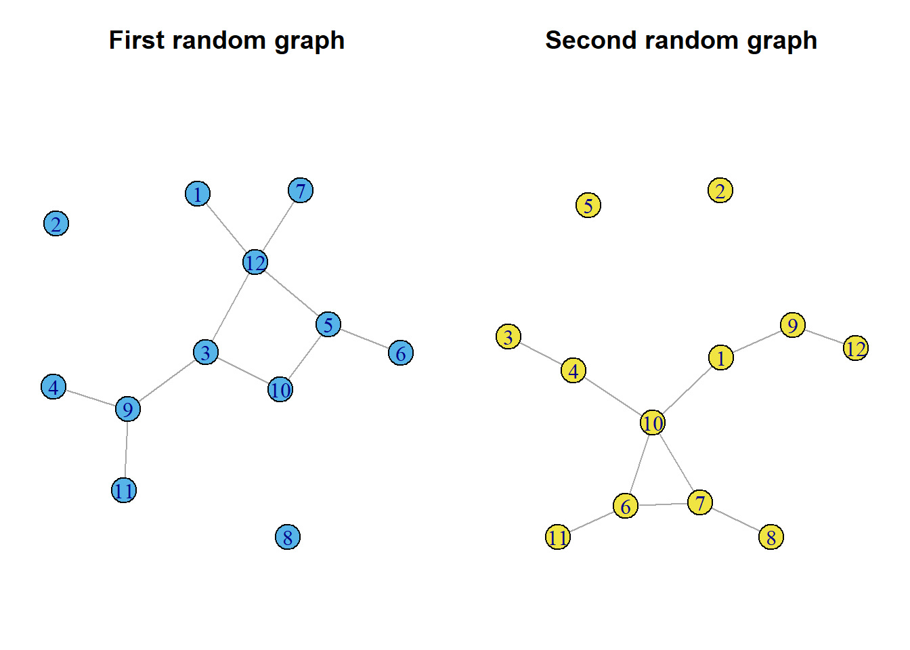
Despite the simplicity of the random graph model, it has led to a number of important discoveries about network structures. First, for large n the network will have a Poisson degree distribution.
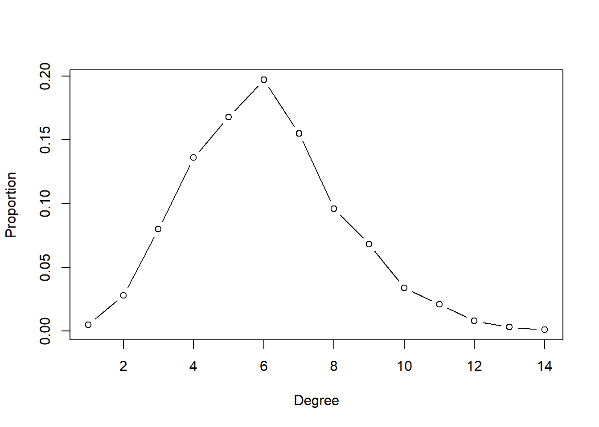
It turns out that random graphs become entirely connected for fairly low values of average degree. That means even when edges are determined randomly, each individual network member does not have to be connected to too many other members for the network itself to be connected (i.e., the network has only one component). More precisely, if p is greater than \(ln{(n)}/n\), then the random graph is likely to be connected in one large component (Newman 2010). The average degree of a random graph, \(c\), is related to graph size and edge probability: \(c = (n−1)p\). So this means that across the range of network sizes often seen in social network analysis (say, 100–10,000), the average degree required to have a completely connected network will be less than approximately 12. The following random graph simulation and plot demonstrates this relationship.
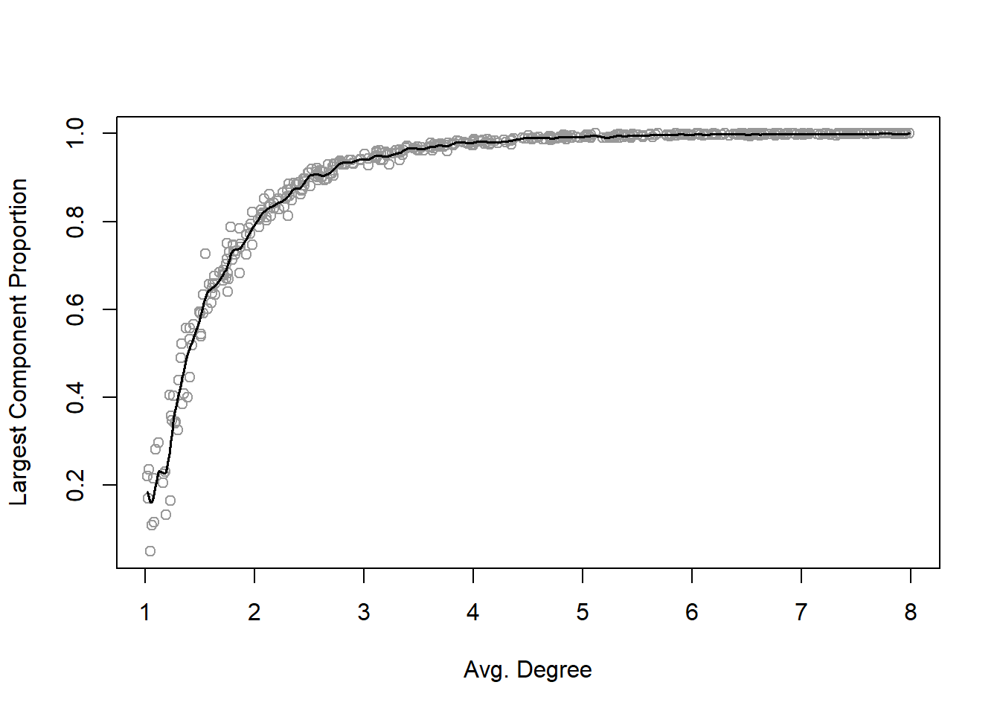
Another surprising property of random graphs is that the connected random graphs are quite compact. That is, the diameter of the largest components in random graphs stays relatively small even for large networks.
The Erdos-Renyi random graph model has one major limitation in that it does not describe the properties of many real-world social networks. In particular, fully random graphs have degree distributions that do not match observed networks very well, and they also have quite low levels of clustering (transitivity).One type of model, called the small-world model by Watts and Strogatz (1998), produces random networks that are somewhat more realistic than Erdos-Renyi.
The small-world model starts with a circle of nodes, where each node is connected to its c immediate neighbors (forming a formal lattice structure). Then, a small number of existing edges are rewired, where they are removed and then replaced with another tie that connects two random nodes. If the rewiring probability is 0, then we end up with the original lattice network. When p is 1, then we have an Erdos-Renyi random graph. The main interesting discovery of Watts and Strogatz who created the model, is that only a small fraction of ties needs to be rewired to dramatically reduce the diameter of the network.
This figure shows how various small-world model networks look with different rewiring probabilities. The watts.strogatz.game() is called to produce a small-world network of 30 nodes. Setting the option nei=2 (for neighborhood) will start the network with each node tied to the closest two neighbors on either side. This results in each node having degree=4.
g1 <- sample_smallworld(dim=1, size=30, nei=2, p=0)
g2 <- sample_smallworld(dim=1, size=30, nei=2, p=.05)
g3 <- sample_smallworld(dim=1, size=30, nei=2, p=.20)
g4 <- sample_smallworld(dim=1, size=30, nei=2, p=1)
op <- par(mar=c(2,1,3,1),mfrow=c(2,2))
plot(g1,vertex.label=NA,layout=layout_with_kk,
main=expression(paste(italic(p)," = 0")))
plot(g2,vertex.label=NA,
main=expression(paste(italic(p)," = .05")))
plot(g3,vertex.label=NA,
main=expression(paste(italic(p)," = .20")))
plot(g4,vertex.label=NA,
main=expression(paste(italic(p)," = 1")))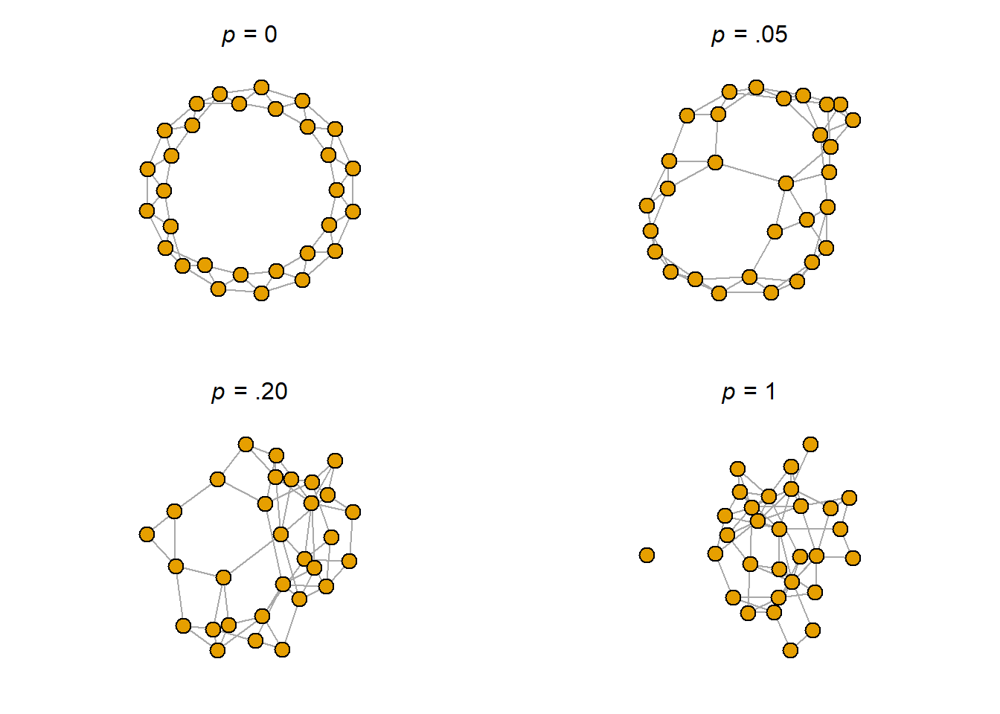
The following simulation and figure shows how quickly rewiring reduces the diameter of a network in the small-world model. Working with a network with 100 nodes, each node starts out connected to its two neighbors on each side. The graph will thus have 200 edges. The starting diameter of the lattice network is 25 (getting from one node to the other side of the circle takes 25 steps).
IGRAPH 3b225dc U--- 100 200 -- Watts-Strogatz random graph
+ attr: name (g/c), dim (g/n), size (g/n), nei (g/n), p (g/n), loops
| (g/l), multiple (g/l)
+ edges from 3b225dc:
[1] 1-- 2 2-- 3 3-- 4 4-- 5 5-- 6 6-- 7 7-- 8 8-- 9 9--10 10--11
[11] 11--12 12--13 13--14 14--15 15--16 16--17 17--18 18--19 19--20 20--21
[21] 21--22 22--23 23--24 24--25 25--26 26--27 27--28 28--29 29--30 30--31
[31] 31--32 32--33 33--34 34--35 35--36 36--37 37--38 38--39 39--40 40--41
[41] 41--42 42--43 43--44 44--45 45--46 46--47 47--48 48--49 49--50 50--51
[51] 51--52 52--53 53--54 54--55 55--56 56--57 57--58 58--59 59--60 60--61
[61] 61--62 62--63 63--64 64--65 65--66 66--67 67--68 68--69 69--70 70--71
+ ... omitted several edges[1] 25The simulation is set to calculate 300 networks, ten each for the number of edges to rewire ranging from 1 to 30. Because we know how many edges are in each graph (200), the rewiring probability can be calculated by the number of rewired edges divided by total number of edges. If 30 edges are rewired, then, the probability is 0.15.
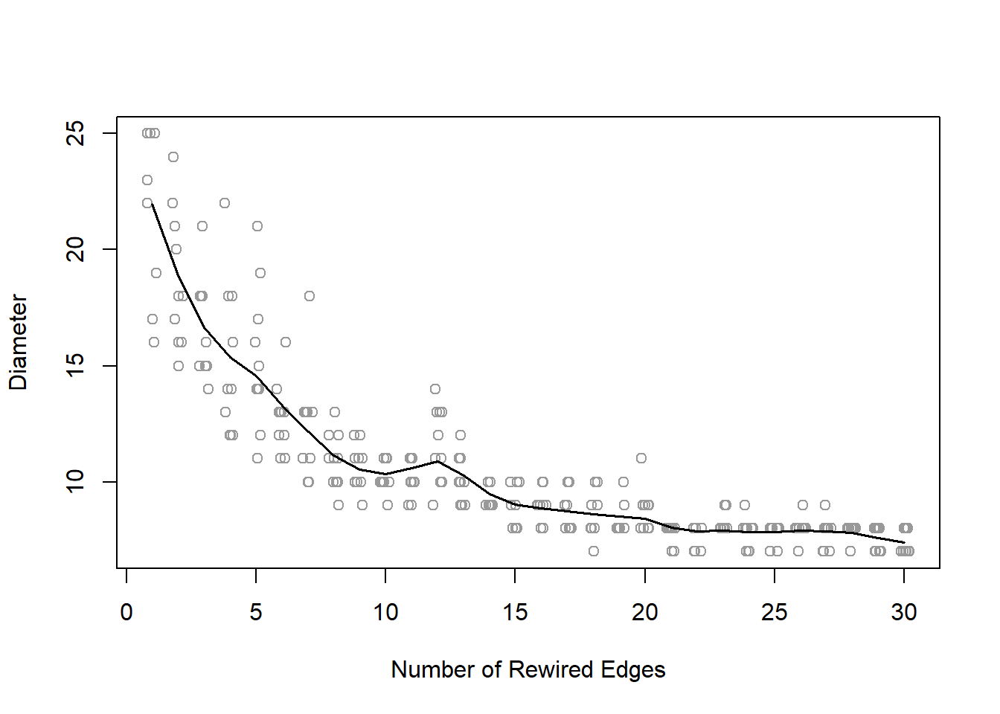
The plot demonstrates that after only rewiring ten of the edges (p=0.05), the diameter has shrunk at least 60%, from 25 to about 10.
An important limitation of the previous two mathematical network models is that they produce graphs with degree distributions that are not representative of many.real-world social networks. Numerous studies, in fact, have shown that a wide variety of observed networks have heavy-tailed degree distributions that approximately follow a “power law”. These are typically called scale-free networks. For example, both the network of sexual partners and the World-Wide-Web exhibit this scale-free pattern. That is, some people have many sexual partners (high degree), but most people have a small number of sexual partners.Similarly, some websites have a very large number of other websites connected to them, but most websites have only a few connections. How does this power-law characteristic feature of scale-free social networks arise? A number of network scientists have explored this question, and have determined that a network formation process of cumulative advantage, or preferential attachment can explain this. That is, as networks grow, new nodes are more likely to form ties with other nodes that already have many ties, due to their visibility in the network. This ‘rich-gets-richer’ phenomena has been shown to lead to the powerlaw distribution in networks.
The preferential attachment model of Barabasi and Albert is implemented in igraph with the barabasi.game() function. This is a more complicated algorithm than those for the previous models, partly because this is a network growth model, not just a static network structure model.
The figure below displays a 500-node network that is formed with this preferential attachment model. The default behavior of the algorithm is that as each new node is added to the network, it is connected to another node in the network, with probability proportional to the degree of that node. Thus, some nodes in the network will end up with many more ties than most of the other nodes. Note that sample_pa command is equivalent, it contains many options to complicate the model not shown here.
In the 1950s John Gagnon collected sociometric choice data from 67 prison inmates. All were asked, “What fellows on the tier are you closest friends with?” Each was free to choose as few or as many “friends” as he desired. The data were analyzed by MacRae and characterized by him as “less clear cut” in their internal structure than similar data from schools or residential populations.
Read the data and transform them into an igraph object. Then think about how many friends an inmate will have, and test your hypothesis. Assume that both an incoming nomination and outgoing nomination indicate a friendship relation.
Who is the most popular inmate?
Are more popular inmates also inclined to nominate more others as friends (so in a way are the more agreeable)
To what degree are friendship nominations reciprocated?
Calculate the triad census and interpret the outcome.
Assuming that a nomination indicates a friendship, what is the diameter of the network, what is the average path length? How clustered is the network?
Compare the prison network to a random network (ER model with the same nr of vertices and edges)